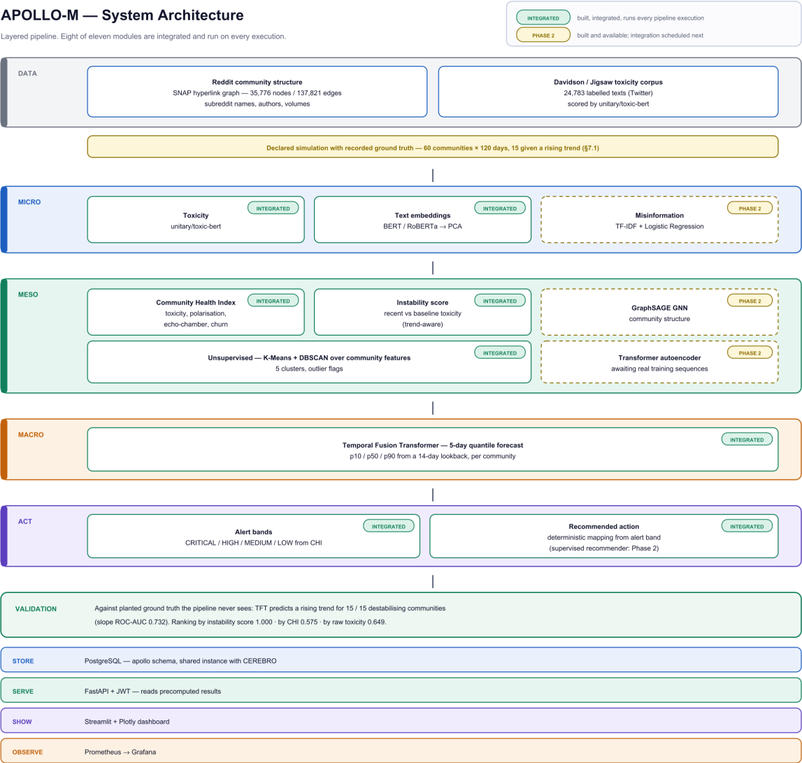
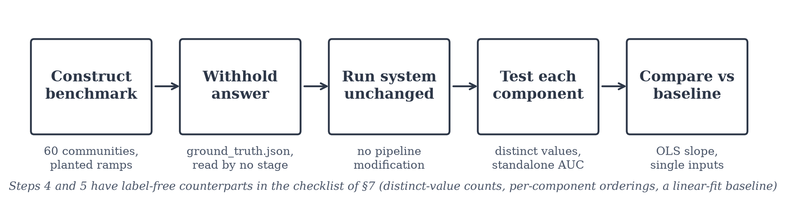
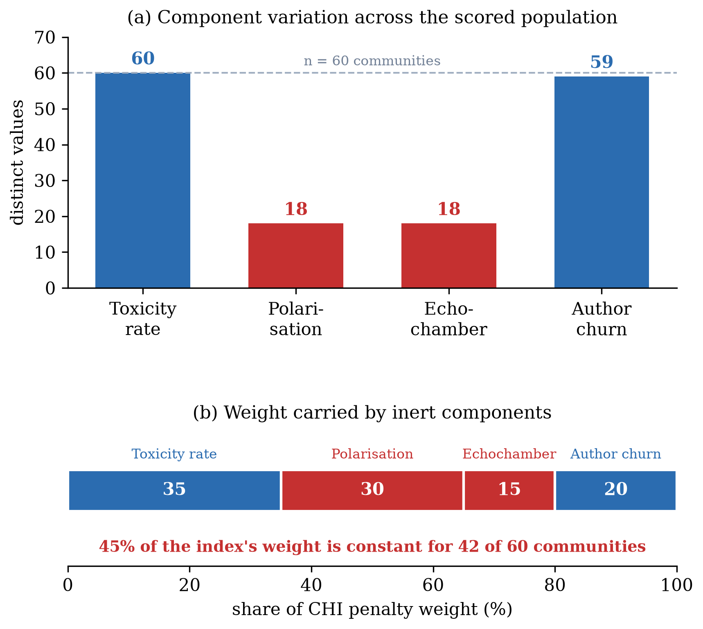
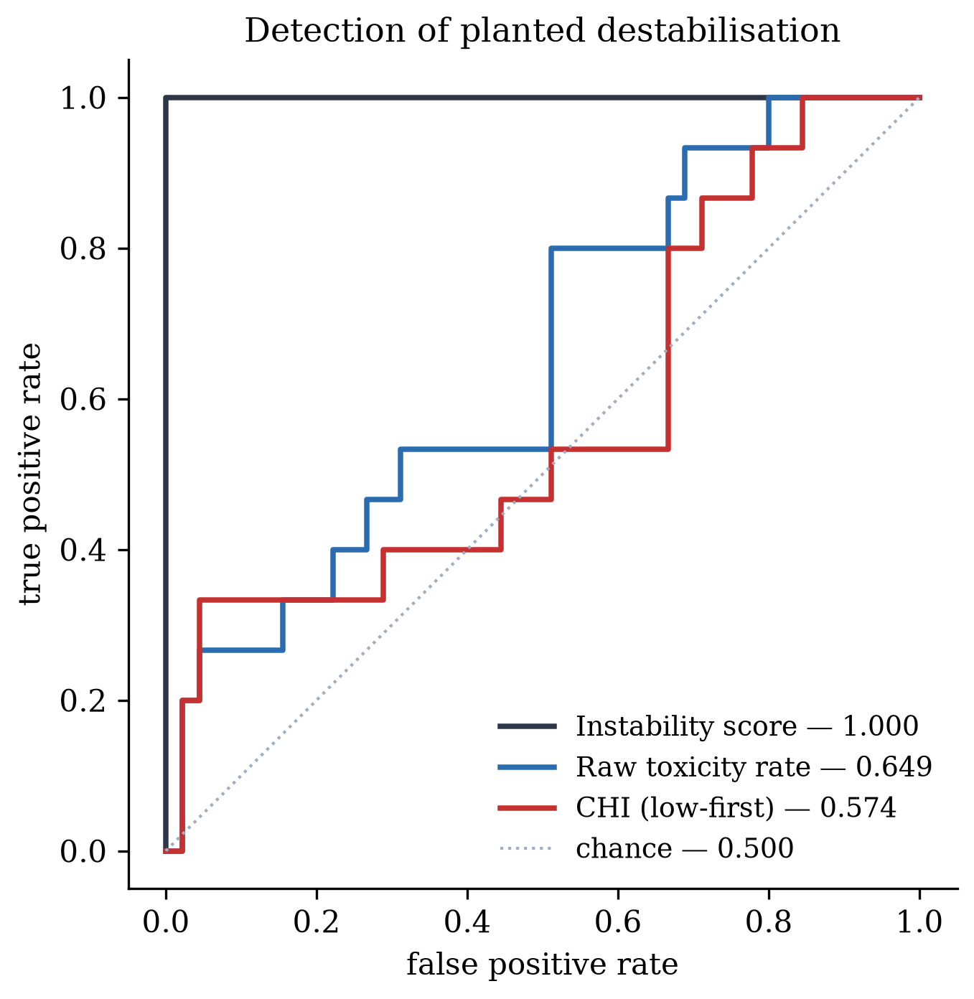
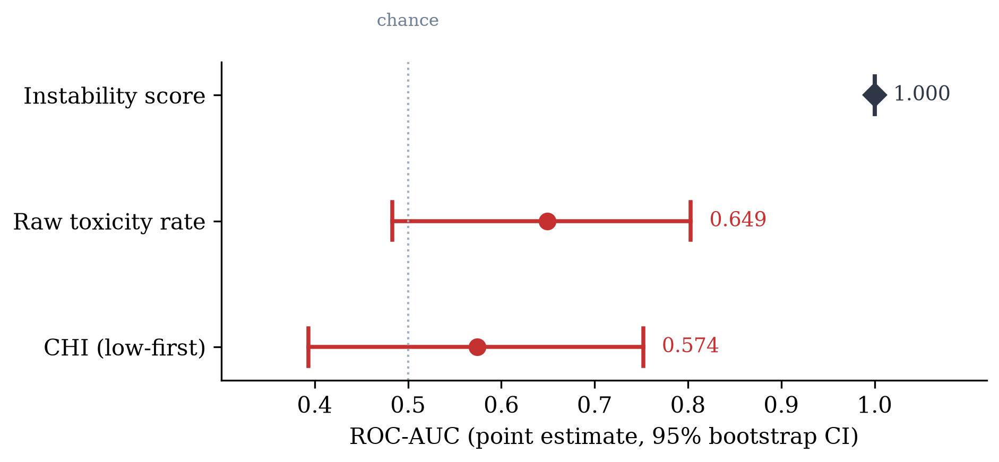
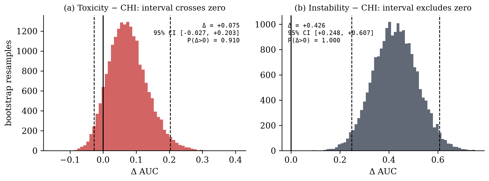
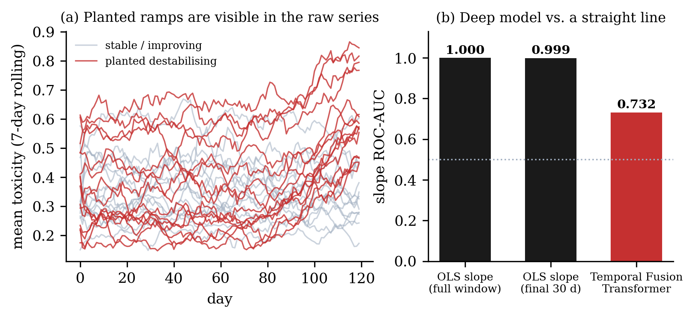
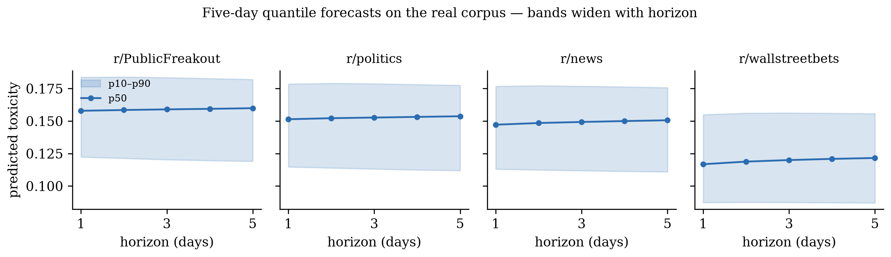
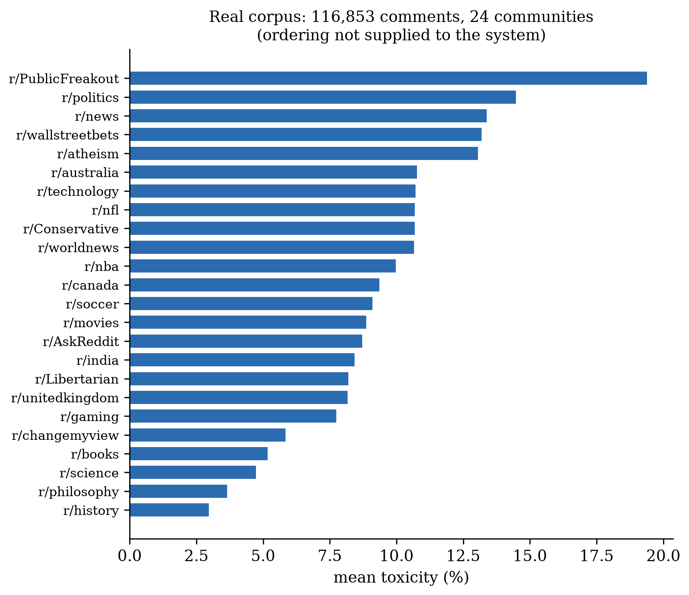
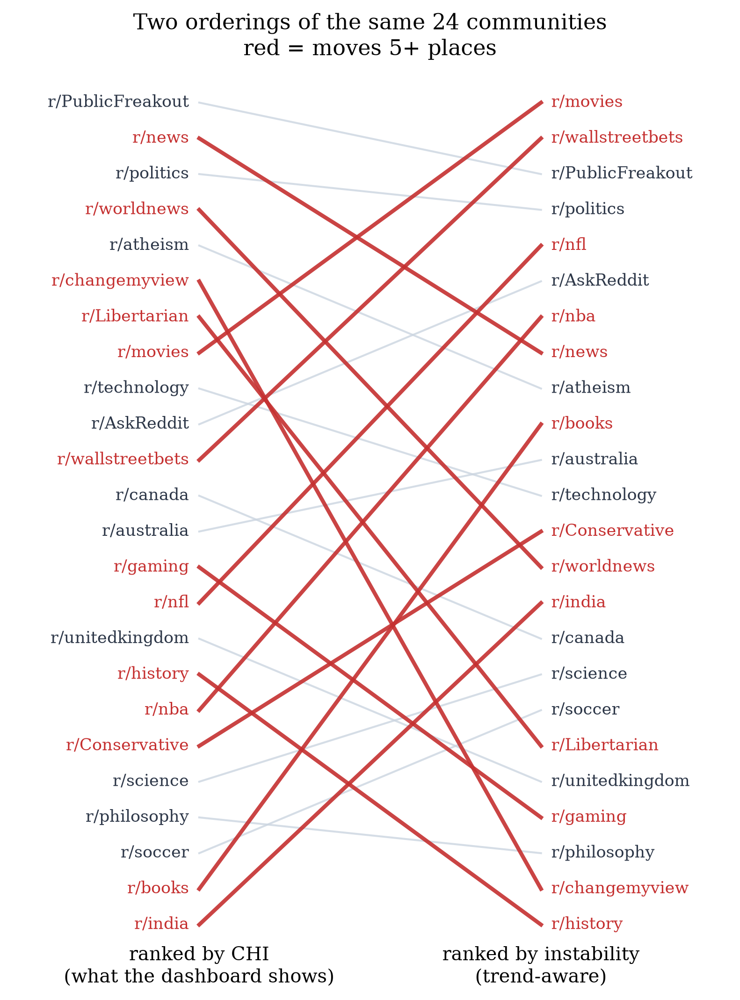

Department of Computer Science, Bahria University, Karachi Campus
Reg. No. 02-134231-045 · BS CS 8-A
Systems that rank online communities by "health" are deployed without any way to check whether the ranking measures what it is used for. The index emits plausible numbers, the dashboard orders communities by them, and nothing in the pipeline can detect that the ordering is wrong, because no ground truth exists against which "wrong" could be defined. This is a construct-validity failure of the kind Jacobs and Wallach [1] describe as endemic in computational measurement, and it is invisible to the testing practices that production machine-learning systems normally apply [2], [3].
We describe a lightweight audit procedure for such systems and report what it found when applied to one deployed community-health pipeline. The procedure constructs a benchmark in which the answer is recorded in advance and withheld from every pipeline stage, then subjects each component of the index, and the composite, to the same known-answer test. A planted signal can only test whether an instrument detects what it was built to detect; we therefore treat the benchmark as a test instrument, never as evidence about online communities.
Applied to a five-layer pipeline serving a live dashboard, the audit surfaced four defects invisible from the system's outputs. (1) Two of the health index's four components are constant for 42 of 60 scored communities, so 45% of the index's weight is inert for 70% of its population. (2) A third component separates the classes at chance (AUC 0.498). (3) The four-component composite does not measurably outperform its single strongest input (paired ΔAUC, toxicity minus composite, +0.075; 95% CI [−0.027, +0.203]). (4) The pipeline's Temporal Fusion Transformer [4] recovers the planted trajectory at slope AUC 0.732 (95% CI [0.601, 0.849]), while an ordinary least-squares slope over the same daily series recovers it at 1.000: the deep model underperforms a one-line baseline on the task it was adopted to perform, echoing findings in recommendation [5] and forecasting [6].
On a real corpus of 116,853 comments across 24 communities, ranking by the present-state index and by a trend-aware score agree only weakly (Spearman ρ = 0.383, p = 0.065; 13 of 24 communities move five or more places), and the two top-five lists share only two members. The instrument choice materially changes the moderation queue.
None of these defects was visible before the audit and all four are actionable. The first is detectable by counting distinct values alone, and the procedure's checklist gives label-free checks for the rest. We give the procedure as a seven-item checklist, release the code and data, and argue that measurement audits of this kind are cheap enough to be routine and are currently almost never run.
Keywords: measurement validity, algorithmic auditing, community health, toxicity, known-answer testing, strong baselines, Temporal Fusion Transformer.
Composite "community health" indices are used to decide where moderation attention goes. A typical index combines a toxicity rate, one or more graph-derived structural measures, and a churn statistic into a single score, and a dashboard ranks communities by it. Platforms and researchers have built many such measures [7], [8], [9], and moderator-facing tooling increasingly surfaces them [10].
Such an index is a measuring instrument, and measuring instruments can be wrong in ways their outputs do not reveal. An index that silently substitutes a default value for two of its four components still emits a number in the expected range. A composite that adds nothing to its best component still produces a plausible ordering. A forecasting model that underperforms a linear fit still returns forecasts with well-formed confidence bands. In each case the system's outputs look correct, the dashboard renders, and no test fails. Sculley et al. [2] catalogue this class of silent degradation as a defining hazard of production machine-learning systems, and Breck et al. [3] propose production readiness tests that nonetheless do not reach measurement validity.
The reason these defects persist is not carelessness. It is that validating a community-health ranking requires knowing which communities actually deteriorated and when, and no public dataset supplies those labels. Chandrasekharan et al. [7] obtained a rare quantitative handle on community-level intervention by exploiting a single documented ban event; Zhang et al. [11] obtained trajectory labels at conversation level only through substantial human annotation with topic-matched controls. Absent comparable labels, teams validate what they can: unit tests, schema checks, plausibility of rendered numbers. None of these can detect a construct-validity failure [1].
This paper takes a different route. Rather than seeking real labels, we construct a benchmark whose answer is recorded in advance and withheld from the pipeline, and use it as a test instrument rather than as evidence.
The distinction is the paper's foundation and we state it plainly. A benchmark with a planted signal cannot tell you anything about online communities. If we plant a rising toxicity trajectory and a change-detector finds it, we have learned that our simulator plants what we claim it plants. Any paper presenting that as a finding about the world is presenting a tautology, and we do not present one.
The same benchmark is, however, an excellent audit instrument, for precisely the reason it is a poor evidentiary one: the answer is known. A component that cannot recover a signal deliberately made easy to recover is broken, and we can say so without any claim about real communities. A composite that fails to beat its own strongest input, on a benchmark in which that input carries the planted signal, is not earning its complexity. A deep model beaten by a linear fit on a monotonic ramp has a problem that will not improve on messier data.
Known-answer testing is standard in numerical software verification and in psychometrics, where construct validity has a sixty-year literature [12], [1]. It is largely absent from applied social computing. Algorithmic auditing has developed rapidly as a discipline [13], [14], but has concentrated on fairness and disparate impact rather than on whether an instrument measures the quantity it is used for. This paper is an argument that the latter deserves the same treatment, made by demonstration.
It makes no claim about accuracy on real community collapse, and no claim that composite indices in general are invalid. It is a single case study of a single system. The generalisable object here is the procedure, not the verdict.
Davidson et al. [16] separated hate speech from merely offensive language and released a corpus of 24,783 annotated tweets that remains a standard benchmark; their central finding, that lexical methods systematically confuse the two, motivated later transformer work. Wulczyn et al. [17] scaled annotation to over a hundred thousand Wikipedia discussion comments, showing crowd labels can approximate expert judgement at scale, and Founta et al. [18] characterised abusive behaviour on Twitter across overlapping categories. With pretrained language models [19], [20], per-message accuracy improved substantially; the Detoxify family [21] fine-tunes BERT on the Jigsaw corpora and supplies calibrated per-message probabilities. It provides the micro-level signal in the system audited here.
The limitation common to this strand is unit and timing: these systems classify one message, in isolation, after publication. They say nothing about a community in aggregate and nothing about the future.
Chandrasekharan et al. [7] examined Reddit's 2015 ban of several hate-focused communities and measured the effect on the speech of their displaced members. Kumar et al. [8] studied inter-community conflict directly, analysing sentiment-weighted hyperlinks between subreddits and the mobilisation that follows. Cinelli et al. [9] compared echo-chamber formation across four platforms, showing the effect varies with platform architecture rather than being a universal property of social media. Garimella et al. [22] proposed graph-based measures for quantifying controversy in discussion networks. Danescu-Niculescu-Mizil et al. [23] showed that communities and their members change measurably over time, which underpins churn-style features. Jhaver et al. [10] documented how Reddit moderators combine human judgement with Automoderator, finding practice remains largely manual, rule-based and reactive.
This literature constructs community-level measures. Our reading is that it rarely audits them: a measure is introduced, shown to correlate with something plausible, and then used downstream. We are not aware of prior work that subjects a deployed community index to a component-level known-answer test. That gap, rather than any particular index's shortcomings, is what this paper addresses.
Cronbach and Meehl [12] formalised construct validity, whether an instrument measures the theoretical quantity it is claimed to measure, and the concept is foundational in psychometrics. Jacobs and Wallach [1] imported it into machine learning, arguing that many computational measurements of social constructs are never validated at all and that the resulting failures are systematic rather than incidental. Raji et al. [13] and Metaxa et al. [14] developed algorithmic auditing into a practice, though with emphasis on fairness and disparate impact. This paper applies the construct-validity lens to a deployed community-health index and supplies a concrete procedure, which the measurement-validity literature has tended to leave abstract.
Closest in spirit is Zhang et al. [11], who predict from the opening turns of a conversation whether it will later derail into personal attack, using pragmatic cues present at the outset. Their contribution is methodological: early linguistic signal is genuinely predictive of later breakdown, so a system can act before it rather than classify after. Their unit is the conversation; the audited system's is the community. Their ground truth is human-annotated real data with topic-matched control pairs, the methodologically correct approach in this domain, and the one we recommend for any paper making claims about real communities (§12).
Scheffer et al. [24] review evidence from ecology, climate and finance that complex systems exhibit measurable early-warning signals, rising variance and critical slowing down, before critical transitions. This is the theoretical grounding for supposing community instability is forecastable at all. We note that the audited system cites this literature but does not implement its statistics; no autocorrelation or variance-based indicator appears in the pipeline.
Lim et al. [4] introduced the Temporal Fusion Transformer, combining recurrent processing of local dynamics with interpretable attention over longer horizons, supporting static covariates alongside time-varying inputs, and trained with a quantile loss so it emits prediction intervals rather than point estimates. Salinas et al. [25] and Oreshkin et al. [26] offer probabilistic and residual-stack alternatives. The audited system selected the TFT for its quantile outputs and attention-based auditability.
A recurring finding across applied machine learning is that carefully tuned simple baselines match or exceed reported neural results. Dacrema et al. [5] reproduced eighteen neural recommendation papers and found most were outperformed by well-configured classical methods. Lin [15] made an analogous argument in information retrieval. Makridakis et al. [6] found statistical methods competitive with or superior to machine-learning methods across the M-competition series. Our Finding 4 (§5.4) is a social-computing instance of the same pattern, and we report it in that tradition.
Zhang et al. [11] establish that trajectory forecasting is achievable at conversation level. Chandrasekharan [7], Kumar [8], Cinelli [9] and Garimella [22] establish community-level measurement. Jacobs and Wallach [1] establish that such measurements are frequently unvalidated. This paper sits at the join: it supplies a procedure for validating a deployed community-level instrument, and reports the result of applying it once.
APOLLO-M is a five-layer pipeline serving a public dashboard and REST API. Figure 1 shows its structure and, importantly, which modules are integrated into every execution versus built but not yet invoked, a distinction that bears on §5 and that the audited system itself documents.

unitary/toxic-bert [21]; a meso layer aggregates into a Community Health Index and a trend-aware instability score; an unsupervised layer clusters communities with K-Means [27] and DBSCAN [28]; a macro layer forecasts five days ahead with a Temporal Fusion Transformer [4]; an act layer emits graded alerts. Results are stored in PostgreSQL, served over an authenticated REST API, and monitored with Prometheus and Grafana. Reproduced from the source project report. Two labels in the diagram predate this paper: the "Davidson / Jigsaw" corpus is the 24,783-tweet Davidson et al. corpus [16], and the validation box's CHI figure of 0.575 is the system's own rounding of 0.5748; Table 2 reports 0.574 under the tie-aware computation of §4.4.We audit the ranking behaviour of the meso and macro layers, since that is what the dashboard's ordering depends on and what a moderator would act on.
The index is a weighted penalty over four present-state quantities, each normalised to [0, 1]:
CHI = 100 − (35·toxicity + 30·polarisation + 20·churn + 15·echo), clamped to [0, 100](1)
Higher CHI means healthier, so ranking for intervention takes lowest CHI first. Toxicity is the mean per-comment score over the window. Polarisation and echo-chamber are derived per community from the SNAP Reddit hyperlink network released with Kumar et al. [8]. Churn is the fraction of early-window authors absent from the late window, following the lifecycle intuition of Danescu-Niculescu-Mizil et al. [23].
Critically for §5.1, the implementation falls back to a global constant when a community is absent from the hyperlink graph:
pol = global_polarization if pol is None else pol echo = global_echo if echo is None else echo
This fallback is silent. Nothing downstream distinguishes a fitted value from a default.
The same layer computes a second, trajectory-sensitive quantity. Let τrecent be mean toxicity over the final quartile of the window and τbase the mean over the preceding period; the trend is Δτ = τrecent − τbase. Then:
instability = 0.65 · clip(Δτ / 0.25, 0, 1) + 0.35 · toxicity, clamped to [0, 1](2)
The trend term dominates by design: a community that is rising is one a moderator can still act on, whereas a stably hostile one is already known.
The TFT [4] consumes a 14-day lookback of the daily toxicity series and emits p10/p50/p90 quantiles over a five-day horizon per community. Figure 8 shows representative outputs on the real corpus. The bands widen with horizon, as they should; an earlier build emitted constant-width bands, and that defect was corrected during development.
The system is publicly reachable: a Streamlit dashboard, a Next.js server-rendered view reading from Supabase Postgres with row-level security, a FastAPI REST service with JWT authentication and OpenAPI documentation, and a Prometheus metrics endpoint. The audit was performed against the same code paths that serve these surfaces, with no modification to the pipeline.
The study is quantitative and single-case. Its unit of analysis is the community; its measurements are threshold-free detection statistics (ROC-AUC), bootstrap interval estimates, and rank correlations between orderings. Its design is a known-answer test: a benchmark whose labels are fixed in advance and withheld from the system under test. No qualitative coding, interviews or human annotation are involved, and the one non-numerical judgement in the paper, the face-validity reading of Figure 9, is labelled as such.
Evaluating a ranking of communities by destabilisation requires knowing which communities destabilised and when. No public dataset supplies those labels. Documented moderation interventions, quarantines and bans with public dates [7], are the most promising real substitute and are the subject of ongoing work (§12); they were not available at the scale required here. We therefore use a benchmark whose properties are declared in advance, and treat it strictly as an instrument (§1.2).
Sixty communities are generated over a shared 120-day calendar, totalling 261,337 comments. Construction maximises realism everywhere except the planted signal:
unitary/toxic-bert [21]. Every generated comment carries the genuine score for the exact text it contains; no toxicity value is invented.data/ground_truth.json, which no pipeline stage reads. Recovery is therefore a measurable outcome rather than an assertion, functionally a pre-registration.The planted trajectory is a monotonic ramp. This is deliberate: an audit wants the easiest possible version of the task so that failure is unambiguous. A component that cannot find a monotonic ramp will not find anything subtler.

The audit asks four questions, one per finding in §5.1 to §5.4:
Detection is reported as ROC-AUC, which is threshold-free and therefore insensitive to an arbitrary alert cut-off. We compute AUC via the Mann–Whitney statistic with average ranks, so that ties, abundant here given the constant components of §5.1, are handled correctly.
Confidence intervals come from bootstrap resampling of communities [29]: 20,000 resamples, percentile method, seed 20260903. Paired comparisons resample once per iteration and compute both AUCs on the same resample, so the comparison accounts for correlation between signals measured on the same communities. Degenerate resamples (no positives or no negatives) are excluded under a single shared mask so paired arrays remain aligned.

Table 1. CHI's four inputs, examined directly (n = 60, 15 positive).
| Component | Weight in Eq. (1) | Distinct values | Standalone AUC |
|---|---|---|---|
| Toxicity rate | 35 | 60 | 0.649 |
| Polarisation | 30 | 18 (constant for 42) | 0.460† |
| Echo-chamber index | 15 | 18 (constant for 42) | 0.464† |
| Author churn | 20 | 59 | 0.498 |
† Computed with 42 of 60 communities tied at the fallback constant; the value is dominated by the tie term and is reported for completeness, not interpreted.
Polarisation and echo-chamber are derived from the SNAP hyperlink network [8], in which only 18 of the 60 benchmark communities appear. The remaining 42 receive the fallback constant of §3.2. A constant cannot contribute to a ranking, so 45% of the index's weight is inert for 70% of the population it scores.
This defect is visible without any ground truth, by counting distinct values per component. It had been present in a deployed system for months, and no output of that system revealed it.
Author churn varies across communities and therefore looks like a live input. It separates planted from unplanted communities at AUC 0.498: chance.
Combined with Finding 1, the composite is, for most of the population it scores, its toxicity term plus a chance term plus two constants. This is a structural account of the index's behaviour that requires no significance test: it follows from how the index is built and what its parts do.


Table 2. Detection of planted destabilisation (n = 60, 15 positive).
| Ranking signal | ROC-AUC | 95% CI |
|---|---|---|
| Trend-aware instability score | 1.000 | [1.000, 1.000] |
| Raw toxicity rate | 0.649 | [0.483, 0.803] |
| Community Health Index (low-first) | 0.574 | [0.393, 0.752] |
Table 3. Paired differences (computed on the same resamples).
| Comparison | Δ AUC | 95% CI | P(Δ > 0) |
|---|---|---|---|
| Toxicity − CHI | +0.075 | [−0.027, +0.203] | 0.910 |
| Instability − CHI | +0.426 | [+0.248, +0.607] | 1.000 |

An earlier version of this work claimed, from point estimates alone, that the composite ranks below its own strongest constituent input, an appealing and counterintuitive result. It does not survive interval estimation and is withdrawn. At n = 60 with 15 positives the difference is +0.075 with an interval crossing zero. The direction is consistent (P = 0.910) but this is not a finding, and we report the withdrawal rather than deleting the trace, following the reporting norms argued for in [13].
What the audit can say is weaker and still useful: the composite fails to beat its best single component. A four-input index that cannot be distinguished from one of its inputs is not earning its complexity, and Findings 1 and 2 explain why. Note also that both present-state intervals include 0.5; neither is demonstrably better than chance here.
The instability score's 1.000 is reported for completeness and must not be read as performance. It measures recent-versus-baseline change (Eq. 2) and the benchmark plants a monotonic ramp; decomposing it, the toxicity-trend term alone also scores 1.000. The score finds the shape it was given. Under this paper's framing that is not a caveat to be defended but the expected behaviour of a correctly-wired instrument on a known-answer test, which is exactly why it is not offered as evidence about communities.

Table 4. Trajectory detection from the same daily series (n = 60, 15 positive).
| Method | Quantity ranked | Slope AUC | 95% CI |
|---|---|---|---|
| OLS slope, full 120-day window | fit to the observed daily series | 1.000 | — |
| OLS slope, final 30 days only | fit to the observed daily series | 0.999 | — |
| Temporal Fusion Transformer [4] | slope of the five-day p50 forecast path | 0.732 | [0.601, 0.849] |
numpy.polyfit(t, toxicity, 1), one line, no training, no hyperparameters, recovers the planted trajectory perfectly. The TFT recovers it at 0.732, and its own bootstrap interval excludes 1.000, so the gap is not an artefact of sampling in the TFT estimate.
Taken in isolation the TFT appears to work: its recall is complete (15/15 planted communities predicted rising) and its mean predicted slopes order correctly across trajectory classes (+0.00235 destabilising, +0.00092 stable, −0.00078 improving). Against a trivial baseline it does not. This is the audit's most consequential finding, and it is consistent with a broader pattern in which neural architectures are found not to beat well-configured simple methods once compared directly [5], [15], [6].
We report this rather than the flattering framing because the flattering framing is the one we originally wrote. The TFT's quantile bands (Figure 8) may still justify its inclusion: a linear fit yields no calibrated uncertainty, and the deployed alerting consumes p10/p50/p90. But that is an argument for the bands, not for the point trajectory, and it was not the stated reason for adoption.

Caveat on comparability. The two methods rank different quantities: the OLS rows fit the observed 120-day (or 30-day) history, whereas the TFT row takes the slope of the model's own five-day forecast path, as the system's validate_simulation.py defines it. Both are computed by the released bootstrap_ci.py against the same withheld labels, and the script reports a paired OLS − TFT difference when the daily series data/apollo_daily.csv is present. A like-for-like re-derivation in which the TFT is scored on the same history it is given remains the obvious next step (§12).
The same pipeline was run on a corpus collected via Arctic Shift, the open successor to Pushshift: 116,853 comments across 24 communities and 68,043 distinct authors over 41 days (2 July to 11 August 2026), scored with the same model.

Offered as face validity only, since no labels exist for this corpus: the resulting ordering matches informed expectation without being told to, with general-news and politically-oriented communities highest and r/history, r/philosophy and r/science lowest.
Two differences between the corpora matter for reading §5.1 to §5.4. First, the real corpus is the harder one: the standard deviation of community mean toxicity is 0.036 on real data (range 0.030 to 0.194) against 0.134 on the benchmark (range 0.148 to 0.692), so between-community separation that the benchmark makes easy should not be assumed to transfer. Second, graph coverage is better on real data: all 24 real communities appear in the SNAP hyperlink network and receive fitted polarisation and echo-chamber values, whereas only 18 of the 60 benchmark communities do. Finding 1's fallback rate is therefore a property of the benchmark's community roster, not of the index; the silent-fallback path itself is present on every corpus, and the audit should be re-run on any new corpus before assuming either magnitude.
The preceding findings concern a constructed benchmark. This one does not, and is therefore free of the circularity discussed in §5.3.

Ranking the real corpus by the present-state index and by the trend-aware score produces substantially different orderings:
If a moderation team can act on five communities this week, the instrument determines three of the five. r/movies is eighth by CHI and first by instability; r/history is seventeenth by CHI and last by instability. The deployed dashboard sorts by CHI and labels its ordering "worst first", a description that presupposes the two questions have the same answer, which on this corpus they do not.
We emphasise what this does and does not show. It does not show the trend-aware ordering is correct; no labels exist for this corpus. It shows that the choice is consequential, which is a precondition for the choice mattering at all, and it holds on real data.
Why these defects persist. All four findings share a structure: the system produced well-formed output at every stage. A constant polarisation value is a valid float. A chance-level churn feature has the right dtype and range. A composite dominated by one input still ranks. A deep model beaten by a line still emits quantiles. Sculley et al. [2] named this class of failure "hidden technical debt"; what our case adds is that the debt can sit specifically in what the numbers mean, where neither unit tests nor monitoring will reach it.
What generalises and what does not. The four defects are properties of one pipeline; we make no claim they recur elsewhere, and §5.5 gives a concrete reason to expect Finding 1's magnitude to differ on other corpora. What generalises is the procedure, and specifically the observation that four of its seven checks need no ground truth at all. Counting distinct values per component, ranking by each component alone, comparing a learned model against a linear fit, and correlating the orderings of candidate instruments are each an afternoon's work for any team with a deployed index.
Cost. The full audit, excluding benchmark generation, is roughly 200 lines of analysis code (released). Benchmark generation reuses the system's own scoring pipeline over a fixed text pool and runs in under an hour. Against the cost of a moderation queue ordered by the wrong quantity for months, this is negligible, which is our central practical argument.
Relation to the broader baseline-reproducibility literature. Finding 4 is not novel in kind. Dacrema et al. [5], Lin [15] and Makridakis et al. [6] made versions of this argument in recommendation, retrieval and forecasting respectively. Our contribution is an instance in applied social computing, obtained from a system that was already deployed rather than from a reproduction study, and framed as one output of a routine audit rather than as a dedicated investigation.
Without ground truth:
With a constructed benchmark (roughly a day, given a scored text pool):
Reporting discipline:
This section addresses ways the findings as stated could be wrong. Section 9 separately delimits what is not claimed at all.
Construct validity. The benchmark operationalises "destabilisation" as a monotonic rise in mean toxicity. Real deterioration is plainly richer, involving moderator load, participant departure and conflict structure [7], [8], [10]. The risk this creates is asymmetric and worth stating precisely: a component that fails our test might still capture something real that our operationalisation omits, so Findings 1 to 3 could understate a component's value. The converse is not available: a component that passes has only been shown to detect the simplest version of the construct. We mitigate by making the planted signal deliberately easy, which makes failure informative even though success is not.
Internal validity. Three specific hazards. First, the instability score and the benchmark share a functional form (§5.3), so its 1.000 carries no information about performance and no conclusion rests on it. Second, the OLS and TFT rows in Table 4 rank different quantities, a fit to the observed history against the slope of a five-day forecast path, so the 0.27 gap, while large and outside the TFT's own interval, is not a like-for-like measurement; §12 names the re-derivation that would close this. Third, bootstrap intervals assume communities are exchangeable, which the shared calendar and common generative process make plausible but do not guarantee.
External validity. The audit is one system, one benchmark, one corpus. §5.5 supplies direct evidence that the benchmark is the easier setting, with between-community toxicity spread nearly four times that of the real corpus, and that Finding 1's 42-of-60 fallback rate is a property of the benchmark's community roster rather than of the index, since every real community is covered by the hyperlink graph. Neither magnitude should be assumed to transfer. Finding 4's direction is consistent with results in three other domains [5], [15], [6], which is weak external support for the pattern but none for the specific 0.27 magnitude.
Conclusion validity. With 60 communities and 15 positives, bootstrap intervals on individual AUCs span roughly ±0.17. This is the binding constraint on the paper: it is why Finding 3 is stated as "fails to beat" rather than "is worse than," and why one earlier claim had to be withdrawn (§5.3). Repeated benchmark instantiation across random seeds would tighten these intervals substantially and requires no new code; it is the single most valuable unexecuted step and is not yet run.
No claim of real-world predictive accuracy. The audit establishes whether the instrument recovers a planted signal. It cannot establish whether the system anticipates real community deterioration, and this paper asserts nothing on that question. Section 12 sets out the study design that could.
No claim that the verdict generalises. The four defects are properties of one pipeline. We do not claim composite indices are generally invalid, nor that these particular failures recur elsewhere. The transferable object is the procedure of §7, not the findings of §5.
One structural measurement is reported but not relied upon. A GraphSAGE [30] structural-risk score in the audited system reached AUC 0.415, but on the 18 communities present in the hyperlink graph, of which only 5 are planted. An AUC over 5 positives is uninformative, and no argument in this paper uses it. We report it because it was measured; suppressing a measured result because it is unhelpful is precisely the failure checklist item 7 exists to prevent.
One figure in the audited system is attributable to a baseline, not the deployed model. Its held-out toxicity figures (90.1% accuracy, macro-F1 0.702) were produced by a TF-IDF + logistic-regression baseline, not by the transformer that scores comments in the pipeline. No result in this paper depends on it, since the audit concerns ranking rather than per-message classification, but an earlier write-up of the system reported it in a way that implied otherwise and the correction belongs on the record.
English only. Multilingual toxicity detection is untested and outside the audited system's scope.
The audited system ranks communities for moderator attention. A mis-specified instrument therefore has a direct cost: attention directed at stably contentious communities that need none, and withheld from deteriorating ones where intervention is still feasible. Publishing an audit that reduces confidence in such an index is, we argue, the responsible direction of error.
Two risks attach to this work. First, an audit procedure can lend unwarranted credibility: passing the seven checks of §7 does not establish that an index is valid, only that it does not fail in these specific ways. We state this explicitly to discourage the procedure being cited as a certification. Second, community-level instability scores are potentially stigmatising: a public "unhealthy community" label can itself affect a community [7]. The system audited here exposes such scores through a public dashboard; we note this as a design question the audit does not resolve.
All data used is either public (SNAP [8], Davidson et al. [16]) or collected from a public archive of public posts. No private data, no personally identifying information beyond public usernames, and no human subjects are involved. The real corpus is aggregated to community-day level before analysis.
All figures and tables are produced by two released scripts in the project repository, both of which resolve paths relative to the repository root and take no manual configuration:
docs/paper/bootstrap_ci.py: Tables 1 to 4 and every number in §5.6, seed 20260903, 20,000 resamples, written to docs/paper/results.json.docs/paper/make_paper_figures.py: Figures 2 to 10 at 300 dpi, from the same inputs.Inputs are outputs/meso_report.csv, outputs/forecast_results.csv, data/ground_truth.json, and their real-corpus counterparts under outputs/real/, all committed. The benchmark's daily series data/apollo_daily.csv, needed for Table 4's OLS rows and Figure 7(a), is regenerated by simulate_data.py. Figure 1 is reproduced from the source project report. Deployed surfaces are publicly reachable for inspection.
The audit answers whether the instrument detects a planted signal. It cannot answer whether the system anticipates real deterioration, and no amount of benchmark work will make it able to.
That requires observed ground truth, and a route is available. Reddit quarantines and bans carry public dates [7]. Training to a fixed window before a documented intervention and testing whether the system flagged the community beforehand yields a measured predictive lead time on real events. Following Zhang et al. [11], such a study should use topic-matched control communities so that deterioration is not confounded with subject matter. Arctic Shift's bulk archives make the required 18 to 24 months per community tractable.
Secondarily: multi-seed benchmark instantiation to tighten intervals; re-scoring the structural measure across all 60 communities; a like-for-like TFT slope, fitted to the same history the OLS baseline sees, under the paired resampling that bootstrap_ci.py already implements; implementing the variance and autocorrelation indicators that the cited early-warning literature [24] specifies but the pipeline omits; and release of the real corpus with its collection scripts.
We applied a known-answer audit to a deployed community-health pipeline and found four defects its outputs did not reveal: two components constant for 70% of the scored population and carrying 45% of the index's weight, a third ranking at chance, a composite that fails to beat its best single input, and a deep forecasting model beaten by an ordinary least-squares slope by 0.27 AUC on the task it was adopted to perform. On real data, the present-state and trend-aware orderings of the same 24 communities share only two of their top five.
The benchmark that surfaced these cannot support conclusions about online communities, and we make none. Its value is as an instrument: because the answer is known and deliberately easy, a component that fails is unambiguously broken. The first defect, moreover, needed no benchmark at all, and the checklist of §7 gives label-free checks for the others.
We also report a claim we had to withdraw once we computed intervals for it. We suspect that is the ordinary outcome of auditing one's own system carefully, and that it is undersupplied in this literature relative to how cheap it is.
[1] A. Z. Jacobs and H. Wallach, "Measurement and Fairness," in Proc. ACM Conf. on Fairness, Accountability, and Transparency (FAccT), 2021, pp. 375–385.
[2] D. Sculley et al., "Hidden Technical Debt in Machine Learning Systems," in Advances in Neural Information Processing Systems (NeurIPS), 2015, pp. 2503–2511.
[3] E. Breck, S. Cai, E. Nielsen, M. Salib and D. Sculley, "The ML Test Score: A Rubric for ML Production Readiness and Technical Debt Reduction," in Proc. IEEE Int. Conf. on Big Data, 2017, pp. 1123–1132.
[4] B. Lim, S. Ö. Arık, N. Loeff and T. Pfister, "Temporal Fusion Transformers for Interpretable Multi-horizon Time Series Forecasting," International Journal of Forecasting, vol. 37, no. 4, pp. 1748–1764, 2021.
[5] M. F. Dacrema, P. Cremonesi and D. Jannach, "Are We Really Making Much Progress? A Worrying Analysis of Recent Neural Recommendation Approaches," in Proc. ACM Conf. on Recommender Systems (RecSys), 2019, pp. 101–109.
[6] S. Makridakis, E. Spiliotis and V. Assimakopoulos, "Statistical and Machine Learning Forecasting Methods: Concerns and Ways Forward," PLOS ONE, vol. 13, no. 3, e0194889, 2018.
[7] E. Chandrasekharan, U. Pavalanathan, A. Srinivasan, A. Glynn, J. Eisenstein and E. Gilbert, "You Can't Stay Here: The Efficacy of Reddit's 2015 Ban Examined Through Hate Speech," Proc. ACM on Human-Computer Interaction, vol. 1, no. CSCW, art. 31, 2017.
[8] S. Kumar, W. L. Hamilton, J. Leskovec and D. Jurafsky, "Community Interaction and Conflict on the Web," in Proc. World Wide Web Conf. (WWW), 2018, pp. 933–943.
[9] M. Cinelli, G. De Francisci Morales, A. Galeazzi, W. Quattrociocchi and M. Starnini, "The Echo Chamber Effect on Social Media," PNAS, vol. 118, no. 9, e2023301118, 2021.
[10] S. Jhaver, I. Birman, E. Gilbert and A. Bruckman, "Human-Machine Collaboration for Content Regulation: The Case of Reddit Automoderator," ACM Trans. Computer-Human Interaction, vol. 26, no. 5, art. 31, 2019.
[11] J. Zhang, J. Chang, C. Danescu-Niculescu-Mizil, L. Dixon, Y. Hua, D. Taraborelli and N. Thain, "Conversations Gone Awry: Detecting Early Signs of Conversational Failure," in Proc. ACL, 2018, pp. 1350–1361.
[12] L. J. Cronbach and P. E. Meehl, "Construct Validity in Psychological Tests," Psychological Bulletin, vol. 52, no. 4, pp. 281–302, 1955.
[13] I. D. Raji, A. Smart, R. N. White, M. Mitchell, T. Gebru, B. Hutchinson, J. Smith-Loud, D. Theron and P. Barnes, "Closing the AI Accountability Gap: Defining an End-to-End Framework for Internal Algorithmic Auditing," in Proc. FAccT, 2020, pp. 33–44.
[14] D. Metaxa, J. S. Park, R. E. Robertson, K. Karahalios, C. Wilson, J. Hancock and C. Sandvig, "Auditing Algorithms: Understanding Algorithmic Systems from the Outside In," Foundations and Trends in Human-Computer Interaction, vol. 14, no. 4, pp. 272–344, 2021.
[15] J. Lin, "The Neural Hype and Comparisons Against Weak Baselines," ACM SIGIR Forum, vol. 52, no. 2, pp. 40–51, 2018.
[16] T. Davidson, D. Warmsley, M. Macy and I. Weber, "Automated Hate Speech Detection and the Problem of Offensive Language," in Proc. 11th Int. AAAI Conf. on Web and Social Media (ICWSM), 2017, pp. 512–515.
[17] E. Wulczyn, N. Thain and L. Dixon, "Ex Machina: Personal Attacks Seen at Scale," in Proc. WWW, 2017, pp. 1391–1399.
[18] A. M. Founta et al., "Large Scale Crowdsourcing and Characterization of Twitter Abusive Behavior," in Proc. ICWSM, 2018, pp. 491–500.
[19] J. Devlin, M.-W. Chang, K. Lee and K. Toutanova, "BERT: Pre-training of Deep Bidirectional Transformers for Language Understanding," in Proc. NAACL-HLT, 2019, pp. 4171–4186.
[20] Y. Liu et al., "RoBERTa: A Robustly Optimized BERT Pretraining Approach," arXiv:1907.11692, 2019.
[21] L. Hanu and the Unitary team, "Detoxify: Toxic Comment Classification with Transformers," 2020. [Online]. Available: https://github.com/unitaryai/detoxify
[22] K. Garimella, G. De Francisci Morales, A. Gionis and M. Mathioudakis, "Quantifying Controversy on Social Media," ACM Trans. Social Computing, vol. 1, no. 1, art. 3, 2018.
[23] C. Danescu-Niculescu-Mizil, R. West, D. Jurafsky, J. Leskovec and C. Potts, "No Country for Old Members: User Lifecycle and Linguistic Change in Online Communities," in Proc. WWW, 2013, pp. 307–318.
[24] M. Scheffer, J. Bascompte, W. A. Brock, V. Brovkin, S. R. Carpenter, V. Dakos, H. Held, E. H. van Nes, M. Rietkerk and G. Sugihara, "Early-warning Signals for Critical Transitions," Nature, vol. 461, pp. 53–59, 2009.
[25] D. Salinas, V. Flunkert, J. Gasthaus and T. Januschowski, "DeepAR: Probabilistic Forecasting with Autoregressive Recurrent Networks," International Journal of Forecasting, vol. 36, no. 3, pp. 1181–1191, 2020.
[26] B. N. Oreshkin, D. Carpov, N. Chapados and Y. Bengio, "N-BEATS: Neural Basis Expansion Analysis for Interpretable Time Series Forecasting," in Proc. ICLR, 2020.
[27] J. MacQueen, "Some Methods for Classification and Analysis of Multivariate Observations," in Proc. 5th Berkeley Symp. on Mathematical Statistics and Probability, vol. 1, 1967, pp. 281–297.
[28] M. Ester, H.-P. Kriegel, J. Sander and X. Xu, "A Density-Based Algorithm for Discovering Clusters in Large Spatial Databases with Noise," in Proc. KDD, 1996, pp. 226–231.
[29] B. Efron and R. J. Tibshirani, An Introduction to the Bootstrap. New York: Chapman & Hall, 1993.
[30] W. L. Hamilton, R. Ying and J. Leskovec, "Inductive Representation Learning on Large Graphs," in Advances in Neural Information Processing Systems (NeurIPS), 2017, pp. 1024–1034.